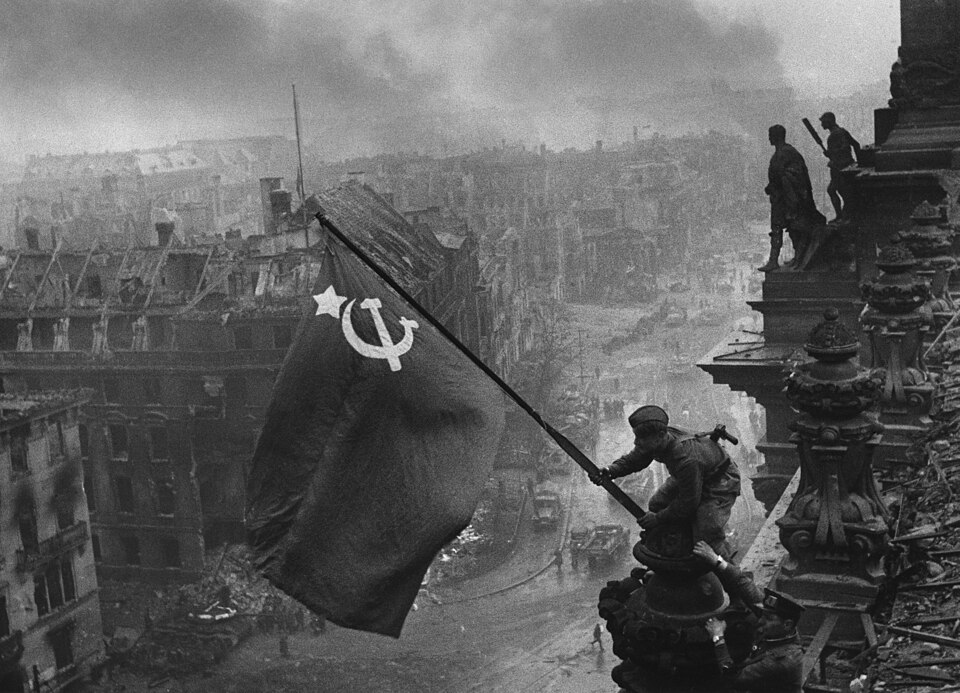
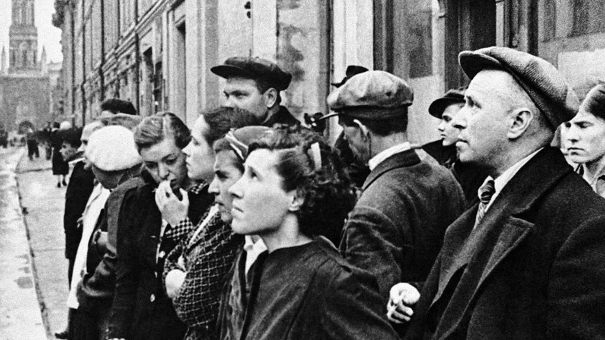

Фотографии
«Знамя Победы над Рейхстагом»
Автор: Е.А. Халдей
Дата создания: 2 мая 1945 года
Описание: Снимок сделан на крыше Рейхстага в Берлине после завершения штурма. На фотографии запечатлены: Алексей Ковалёв (устанавливает знамя), Абдулхаким Исмаилов и Леонид Горичев (помощники) — бойцы 8-й гвардейской армии .

Особенности: Фотография постановочная — снята через день после реального водружения Знамени Победы бойцами 150-й стрелковой дивизии . Знамя для съёмки Халдей сшил из красной скатерти . Оригинальный негатив содержит ретушь: с правой руки Исмаилова иглой удалено изображение вторых часов (трофей), которое сочли недопустимым для публикации
«Первый день войны»
Автор: Е.А. Халдей
Дата создания: 22 июня 1941 года, 12 часов дня
Описание: Снимок сделан в Москве на улице 25 Октября (ныне Никольская) у здания редакции ТАСС. На фотографии запечатлены жители столицы, собравшиеся у уличного репродуктора во время объявления по радио правительственного сообщения о нападении Германии на Советский Союз.

Особенности: Фотография является единственным документальным кадром, снятым именно в день начала войны — 22 июня 1941 года. Автор сделал снимок сразу после возвращения из командировки в Тарханы, выскочив на улицу с фотоаппаратом при первых звуках речи В.М. Молотова. Название экспоната — авторское.